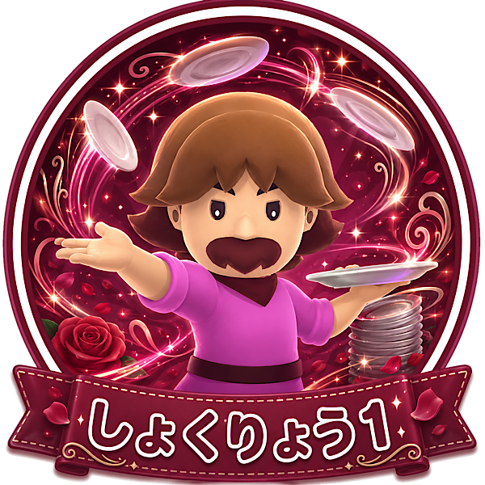

「見た目とノリで楽しむエンジョイ」タイプ
あなたは、効率だけでなく、キャラの見た目や遊び心も大切にするタイプ。
最適解だけを追うよりも、「このキャラで遊んだら楽しそう」という気持ちを大事にできます。
難しい動きやクセのある能力も、楽しみながら試せる人です。
ゲームをただクリアするだけでなく、場の雰囲気やロマンも含めて味わえるタイプです。
しょくりょう1は完成した料理を客席へ投げ渡せる、かなり個性的なスキルを持っています。
条件や狙いは少し難しいですが、うまく決まった時の気持ちよさがあります。
安定重視というより、遊び心やキャラの雰囲気を楽しみたい人に向いています。
自分の好きなキャラで楽しく遊びたいあなたと相性が良いです。